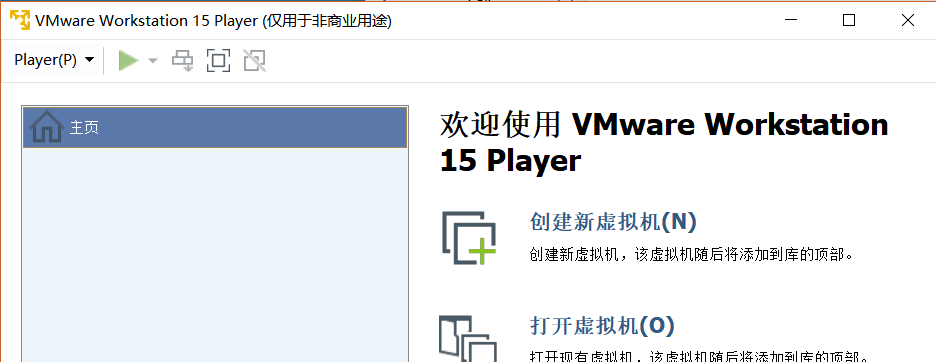
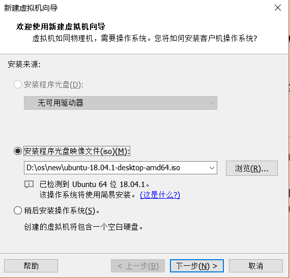
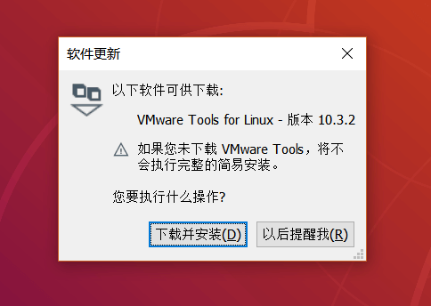
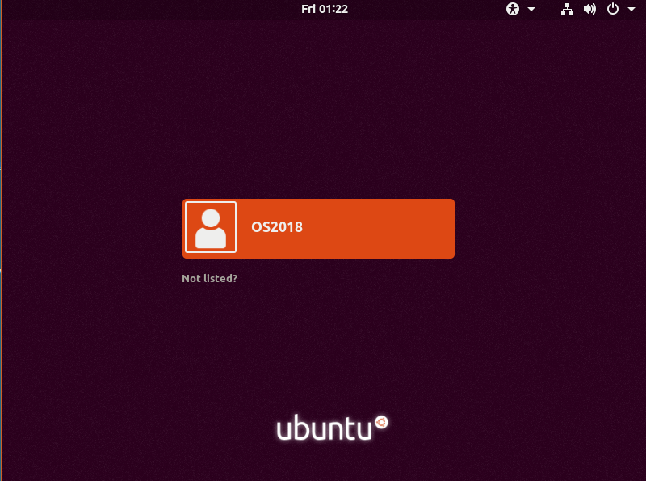
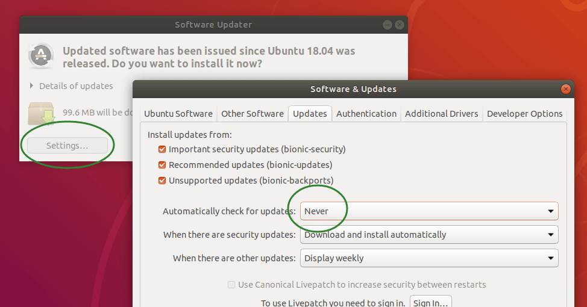
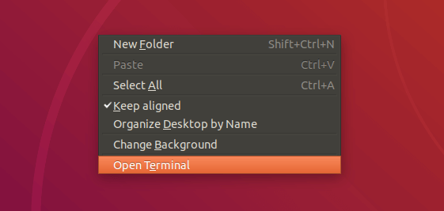
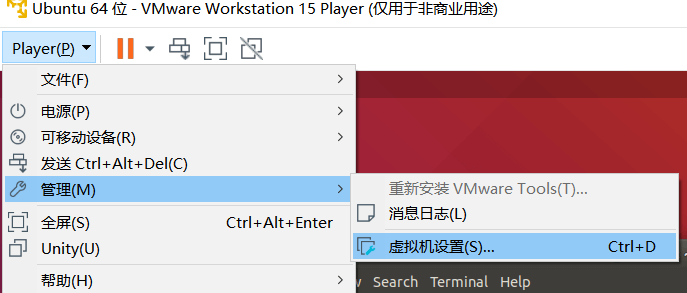
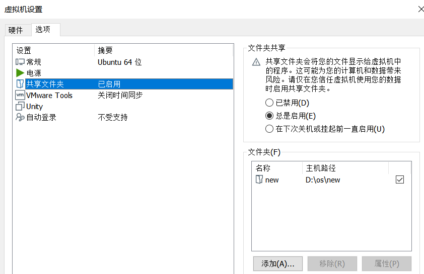

TIP
这个过程与 WSL 下的部署过程 是互斥的。
vmware.zip 中找到 VMware-player-15.0.0-10134415.exe 并安装。如果你喜欢最新版，也可以从 这里 下载最新版本。linux.iso 复制到 VMWare 的安装目录，替换目录中原有同名文件。可以右键单击桌面上的 VMware Workstation 15 Player 图标选择 打开文件所在位置 打开对应的目录。ubuntu.zip 中的 ubuntu-18.04.1-desktop-amd64.iso 备用。如果喜欢最新版，可以从 这里 下载。点击 VMWare Player 右侧的 创建新虚拟机

在弹出的窗口中，选择“浏览”，找到我们之前准备好的 ubuntu-18.04.1-desktop-amd64.iso 文件。如果正确的话，下面会显示 已检测到 Ubuntu 64 位 18.04.1 系统，如下图:

下一步后，随意输入一些你喜欢的信息，设置用户名和密码。
之后的选项，按需修改即可。如果不希望修改可保持默认。完成后，虚拟机会自动启动。如果没有执行准备操作，可能会遇到更新 VMware Tools 的提示。如果网络状况良好，此时可以下载。无法完成下载也并不会影响安装过程。

该阶段不需要进行任何操作，安装将继续进行并完成。该阶段耗时较长，直到出现这一界面，即表示操作成功完成。

使用之前设置好的密码登录，即可完成我们的环境配置。
首次启动可能会提示更新，自动更新过程可能会妨碍我们的正常实验。如果该系统仅为了完成本次操作系统实验，建议修改为 Never。

右键单击桌面空白处，选择 open terminal 或按下 Ctrl + Alt + T 即可打开新的终端。

注意: 如果能学一学 vi 就更好了，如果不愿意学习 vi，可以使用这种方式在 Windows 下用 Visual Studo Code 完成我们的操作系统实验。
配置共享文件夹：
 
设置好后，Linux 系统下的 /mnt/hgfs 即与 Windows 系统下的共享文件夹一一对应。所以我们可以用该方式在 Windows 下访问 Linux 的文件。
注意: 由于 Windows 不支持符号链接，也不支持 0644 和 0755 的权限控制，因此不适合执行除了编写实验代码外的其他操作。在共享文件夹中进行 git checkout 后可能会遇到所有文件从 0644 -> 0755 的权限改动，commit 这些改动即可。